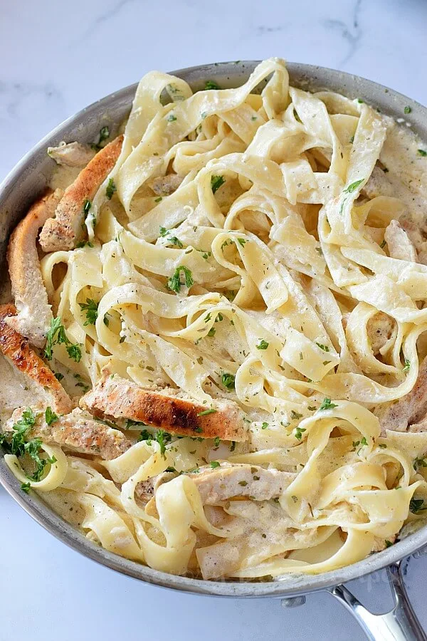

Chicken Alfredo
Home

A quick and easy Alfredo recipe
This recipe takes less than 30 minutes to make with only a handful of ingredients
Ingredients
8 oz Fettuccine
1/2 Chicken Breast, sliced
Salt
1/4 Cup Butter,unsalted
1 Cup Heavy Whipping Cream
1 Cup Parmesan,grated
1/2 tsp Fresh Garlic,grated/minced
1 tsp Garlic Powder
2 tsp Black Pepper Powder
1 Cup Whole Milk
1/3 Cup Chicken Broth
Instructions
Bring a pot of water to boil and add little salt to it.
Let the pasta cook until al dente,drain in colander and run under cold tap water,toss with little oil and keep aside.
Marinate chicken with salt and black pepper powder.
Add 2 Tbsp butter,when it melts,add the chicken pieces and let them cook.
Turn the chicken pieces till they are done equally .
Take the chicken aside and slice them.
In the pan,add remaining butter,when it melts,add garlic,minced and saute further.
Reduce the heat to lowest heat,add milk,broth and mix well.
Add cream,cheese,pepper powder,salt,garlic powder
Keep whisking with egg whisk and keep stirring till the sauce starts to turn smooth and silky.
Keep the sauce on lowest heat and keep whisking till cheese is melted.
Add the chicken sliced and pasta,mix well so that pasta is coated well with sauce.
Finally garnish with chopped parsley.